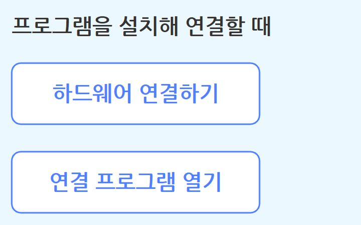
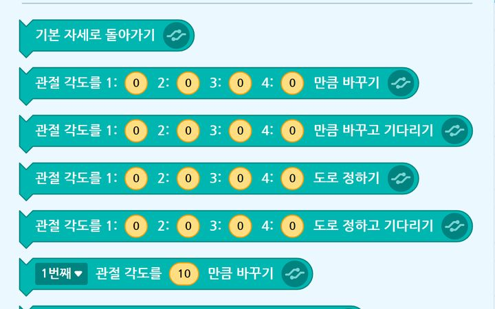

작업 도구엔트리 하드웨어 연결 프로그램
엔트리와 라쿤봇을 이어 주는 프로그램입니다.
해 볼 것 · 설치한 뒤 검색창에 「라쿤」을 입력해 연결합니다. 동글을 꽂고 로봇 전원을 켜 둡니다.
2교시 · 덱 54 · 부록 128–130장열기 ↗
SETUP
실습 전에 한 번 확인하고, 실습 중에 필요한 값을 여기서 복사합니다.
시작 전 확인
복사해서 쓰는 값

작업 도구엔트리와 라쿤봇을 이어 주는 프로그램입니다.
해 볼 것 · 설치한 뒤 검색창에 「라쿤」을 입력해 연결합니다. 동글을 꽂고 로봇 전원을 켜 둡니다.

작업 도구로봇 제어 코딩과 모델 학습을 모두 여기서 합니다.
해 볼 것 · 엔트리 코드 모음의 .ent 파일을 「오프라인 작품 불러오기」로 엽니다.
| 항목 | 기본값 | 7교시에 바꾸는 팀 |
|---|---|---|
| 세대(에포크) | 30 | 다 팀: 15 |
| 배치 크기 | 16 | 그대로 |
| 학습률 | 0.001 | 나 팀: 0.01 |
| 검증 데이터 비율 | 0.25 | 그대로 |
| 자리 | x | y | z (위 → 아래) |
|---|---|---|---|
| 검사대 | 18 | 0 | 8 → 2 |
| A 바구니 (정상) | 10 | 15 | 8 → 3 |
| B 바구니 (불량) | −10 | 15 | 8 → 3 |
예시 값입니다. 3교시에 잰 우리 팀 값으로 고쳐 씁니다. 로봇 뒤쪽(y 음수)은 1번 관절 범위(±120°)를 넘어 갈 수 없습니다.